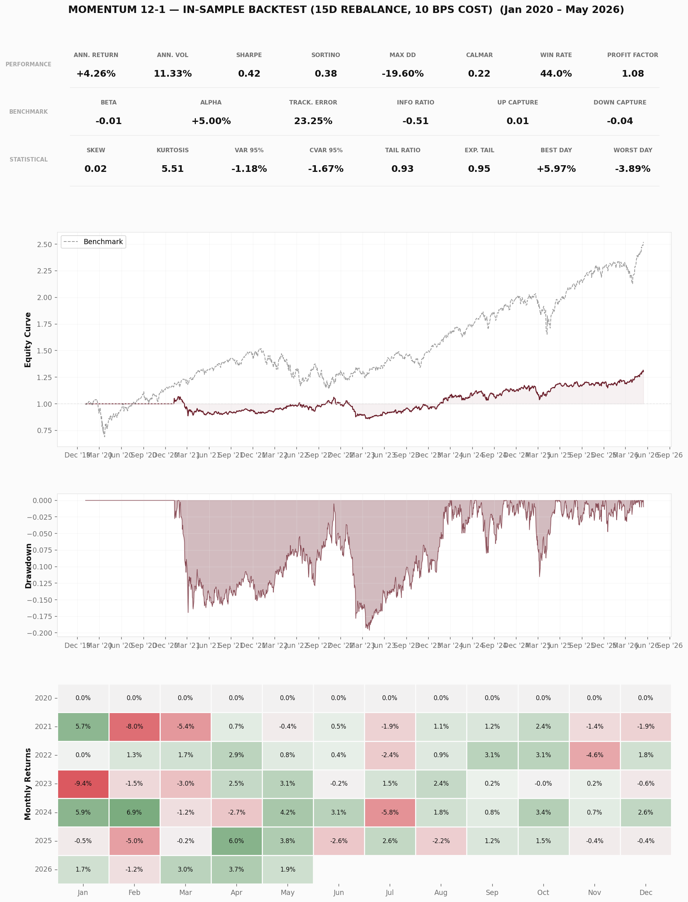

A systematic equity research platform built from scratch in Python. Backtested four alpha factors on 47 US large-caps across all 11 GICS sectors (2021–2026), applying Newey-West corrected IC analysis, block bootstrap confidence intervals, and a full signal validation battery. Best result: +5% annualized alpha vs SPY (Momentum 12-1, 15-day rebalance, 10 bps cost).
Repository: GitHub | Notebooks: Data Exploration Factor Analysis Signal Validation
Screened four alpha factors (momentum 12-1, cross-sectional momentum, RSI, Bollinger z-score). Two survived initial screening; both were ultimately discarded after rigorous statistical validation. The framework — not the signals — is the deliverable.
+5% annualized alpha vs SPY, Sharpe 0.42 at 15-day rebalance. However: Newey-West corrected t-statistic of 1.28 (below 2.0 threshold), regime-dependent (pre-2024 t = 0.17, post-2024 t = 1.83), inconsistent across sectors.
DiscardedIC insignificant at all horizons after NW correction (best t = 0.63). Sharpe improved from -1.58 to +0.20 with frequency/smoothing optimization, but entirely through cost reduction — no detectable alpha.
DiscardedBest-performing signal at optimal parameters (15-day rebalance, 10 bps transaction cost, dollar-neutral long/short). Benchmarked against SPY. All metrics are in-sample backtest results on 47 US large-caps (2021–2026).

All metrics are computed on simple (not log) returns from a dollar-neutral long/short portfolio, indexed by trading day. Annualization assumes 252 trading days per year. Transaction costs modeled at 10 bps per trade.
Solid border = implemented. Dashed = planned.
Signal validation & statistical rigour
Built validation framework: Newey-West HAC t-statistics, non-overlapping IC, block bootstrap 95% CIs, IC decay curves. Signal diagnostics battery (autocorrelation, turnover, dispersion, lead-lag profiles). Sub-period, leave-one-out, sector, and parameter sensitivity robustness tests. Both candidate signals discarded after honest correction. Published signal validation notebook. 180 unit tests.
Alpha framework & factor screening
Built abstract alpha base class with four factors (momentum, cross-sectional momentum, RSI, Bollinger z-score). Vectorized backtester with dollar-neutral positioning and transaction costs. IC analysis module. Screened factors on 47 US large-caps. Published factor analysis notebook.
Performance analytics & tearsheet
22 metrics: Sharpe, Sortino, Calmar, Jensen's alpha, beta, tracking error, information ratio, up/down capture, VaR, CVaR, skewness, kurtosis, tail ratio. Full-page tearsheet with benchmark comparison. Published data exploration notebook.
Data pipeline & core domain model
Alpaca market data client with Parquet storage, incremental fetching, adjustment separation. Type-safe domain types (Bar, Signal, Order, Fill, Position) with frozen dataclasses.